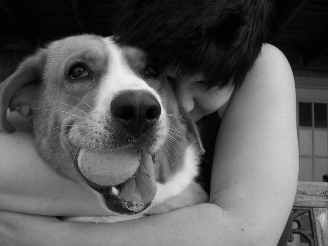
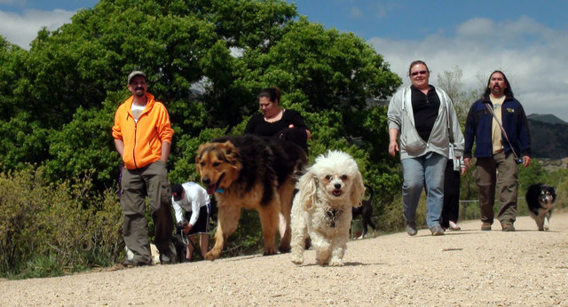
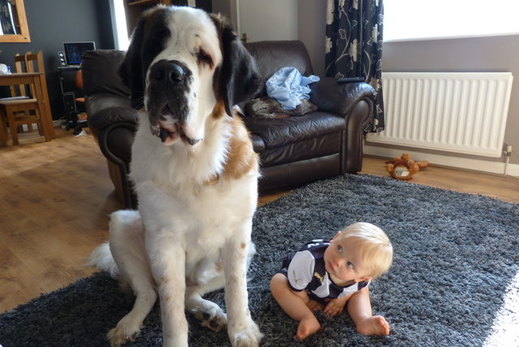

9 science-backed reasons to own a dog
Loyal, protective, and always happy to see you, the dog has been a human companion for more than 18,000 years, making it one of the first domesticated animals in history
Don't just take our word for it.
Scientists have proof that dogs make us laugh more than cats, keep us more active than the average human companion, and even reduce our chances of depression.
So, if you need a little more convincing, or you need to convince someone else in the household, here are the cold, hard facts for why you should own a dog.
1. Dogs Make Us Laugh
People who own dogs laugh more, according to a study published in the journal Society #&38; Animals. Researchers asked people who owned dogs, cats, both, or neither to record how often they laughed over the course of a day. Those who owned just dogs and both dogs and cats recorded laughing more than the other two groups.
2. Dogs Are Loyal

The origin of today's domesticated house dog reaches back to between 18,800 and 32,100 years ago, when they evolved from wolves. Wolves are known for living in packs and developing strong bonds between pack members. It's this pack behavior that's what makes today's dogs so loyal.
Stephen Zawistowski, a science adviser at the American Society for the Prevention of Cruelty to Animals, explains that dogs see their human owners as fellow members of their pack and, therefore, form the same close bond with their owners as they would with their canine brothers and sisters.
3. We're More Social with a Dog

In the UK, a team of scientists at the Universities of Liverpool and Bristol found that UK residents with dogs were more likely to encounter other dogs and dog owners than people who did not own a dog. This makes sense, since dog owners are more likely to head out of the house on walks and run into other dog owners on their own strolls.
Moreover, the average American is more likely to own a dog than the other common house pet, the cat. That's more people to converse with about annoying dog hair, funny dog farts, and comforting dog cuddles.
4. Dogs Keep Us Healthy

Dogs might even protect us from poor health. Children born into households with a dog have a lower risk of developing asthma and allergies, the reason being dust.
A study published in the Proceedings of the National Academy of Sciences last year showed that when exposed to dust from households where dogs were permitted inside and outside, mice developed an altered community of microbes in their gut that protect against allergens. It was reported that these microbes could be what's protecting young children from developing allergens in households with dogs.
And so on....